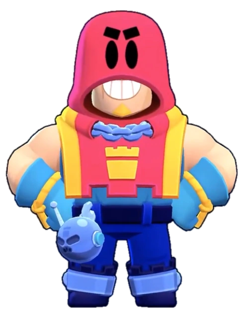

¿Quién es Grom
La prioridad de este fornido centinela es vigilar. Grom arroja su walkie-talkie hacia sus rivales. Su súper es una bomba que rompe muros y hace retroceder a los enemigos.
Grom es un Brawler Épico que se pudo conseguir llegando a las 9 victorias en el desafío de Brawlidad de 2021. Tiene una salud moderada y un alto potencial de daño. Ataca lanzando su walkie-talkie sobre obstáculos que explotan en forma de cruz al hacer contacto. Su Súper es una bomba más grande que explota en cuatro proyectiles más grandes en un patrón cruzado que puede destruir obstáculos y empujar a los enemigos.
|  |
NIVEL DE FUERZA 11 |
Sus gadgets
TORRE DE VIGILANCIA: Grom expulsa una torre de vigilancia de su gromba que permite que los aliados puedan ver a través de los arbustos en una extensa superficie |
RADIODIFUSIÓN: El siguiente ataque de Grom lanza una rápida ráfaga de 3 walkie-talkies. |
Sus habilidades estelares
 |
RONDA DE VIGILANCIA: Cuando el súper de Grom está totalmente cargado. ¡su velocidad de movimiento aumenta en un 15%! |
 |
FACTOR X: Los fragmentos del ataque principal de Grom infligen hasta un 30% de daño extra a distancia máxima. |
 Braian Arancibia
Braian Arancibia Aya El Baarar
Aya El Baarar